Lenguajes
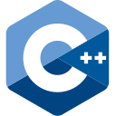
C++ C#
C#- SQL
 HTML
HTML CSS
CSS JavaScript
JavaScript
Hola, soy
Programador en formación · C++ · C# / .NET · SQL
Desarrollo aplicaciones de escritorio, programas de consola y videojuegos en C++ y C# / .NET.
Disponible para mi primera experiencia como programador
Estudiante de la Tecnicatura Universitaria en Programación de la UTN. Programo en C++ y en C# / .NET: desde aplicaciones de consola y estructuras de datos hasta aplicaciones de escritorio con Windows Forms y SQL Server, y videojuegos 2D. Aprendo haciendo: cada tema de la carrera lo llevé al código, con más de 300 programas propios. Busco mi primera experiencia como programador, en un equipo donde pueda sumar y seguir creciendo.
Tecnologías, herramientas y conceptos aplicados en proyectos académicos y personales.

C++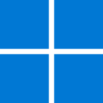
Windows Forms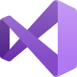
Visual StudioUna selección de mis trabajos más completos. Cada uno incluye una demostración en video y su código fuente.
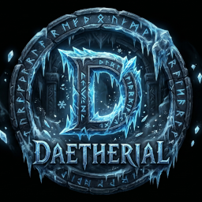
Proyecto destacado · Videojuego 2D
Juego de acción y aventura 2D con vista cenital, ambientado en un mundo de hielo. Desarrollado en equipo en C++ con SFML para Programación II: cerca de 6.000 líneas de código organizadas en módulos.
Proyecto grupal
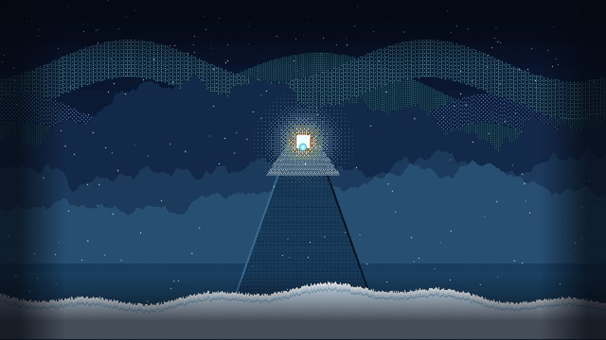
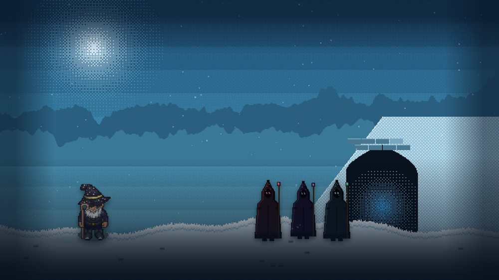
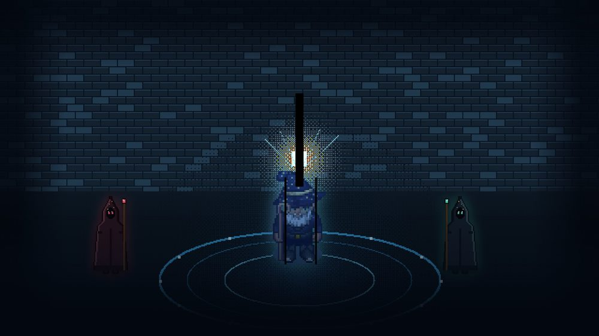
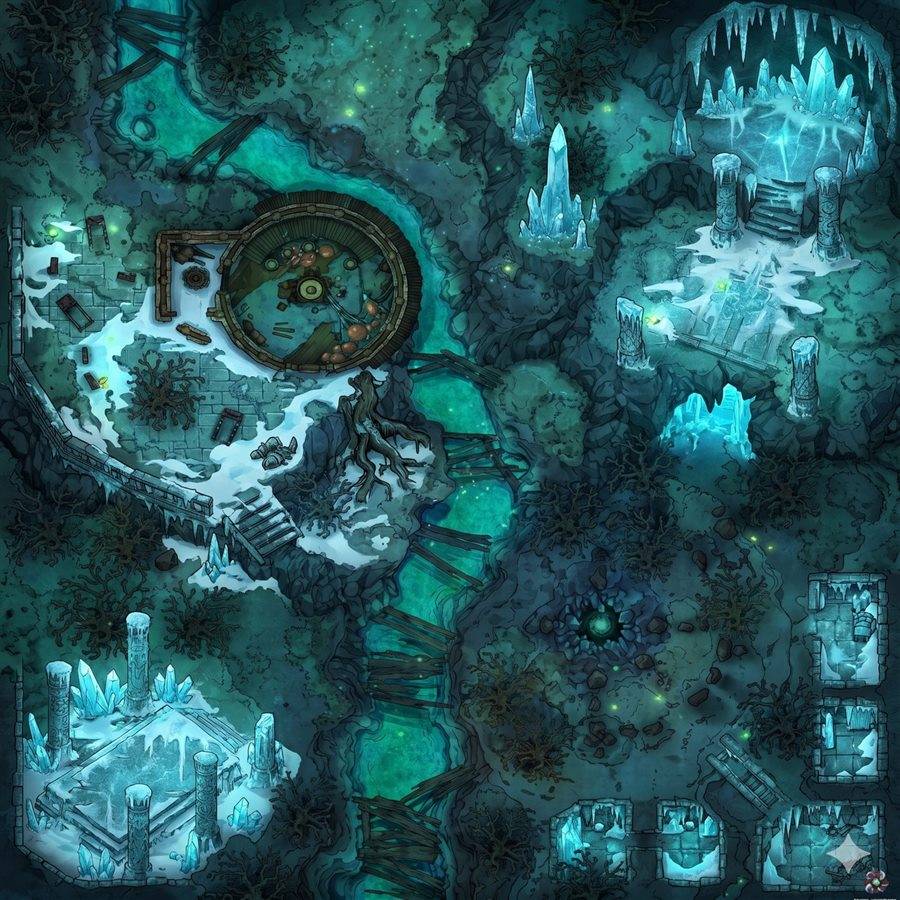
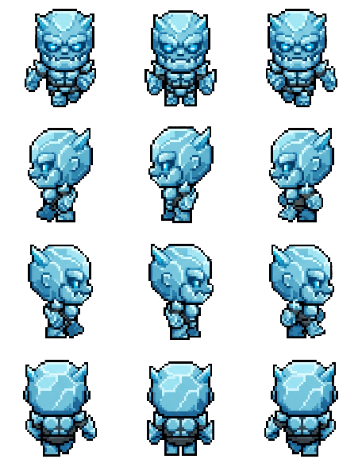
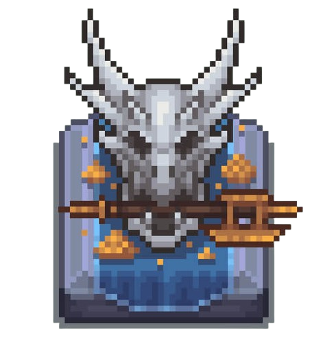
Aplicación de escritorio · C# / .NET · Windows Forms
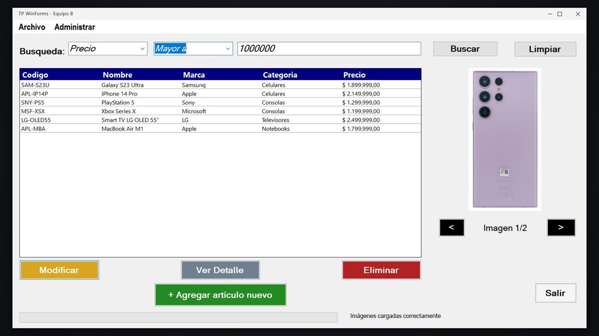
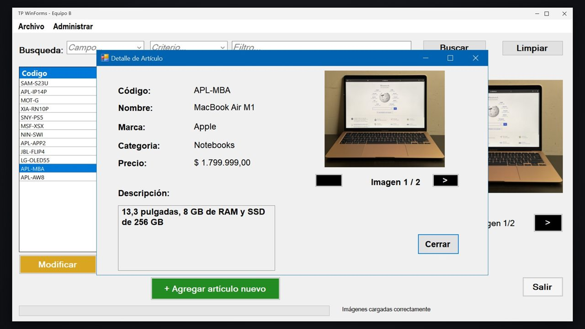
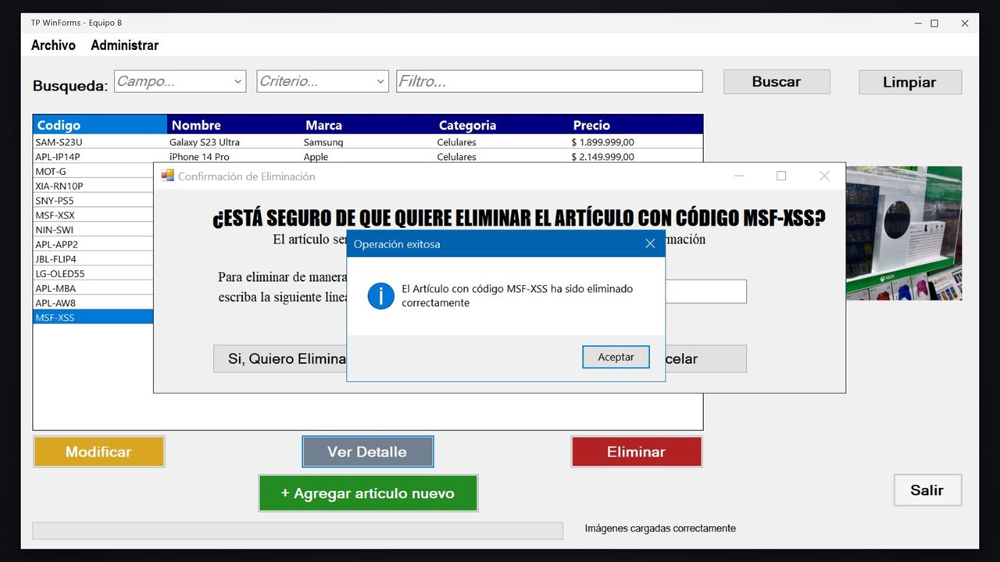
Grupal · C# · Windows Forms
Aplicación de escritorio para gestionar el catálogo de un comercio, conectada a una base de datos SQL Server.
Aplicaciones de consola · C++ · Sin interfaz gráfica
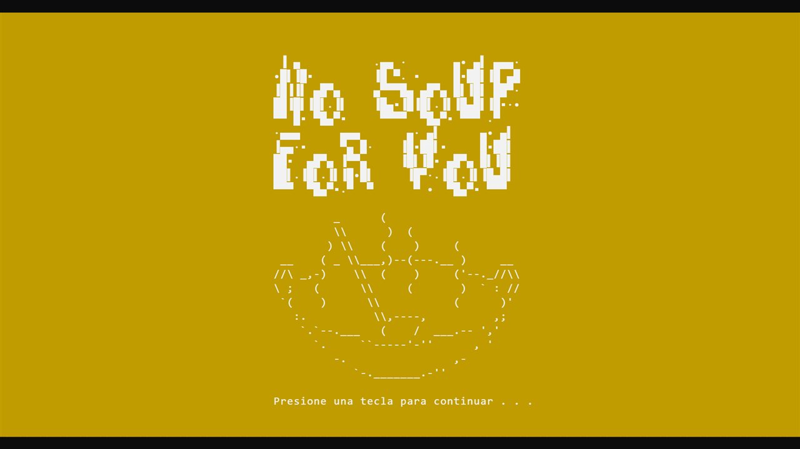
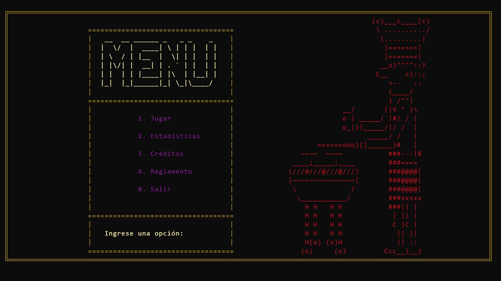
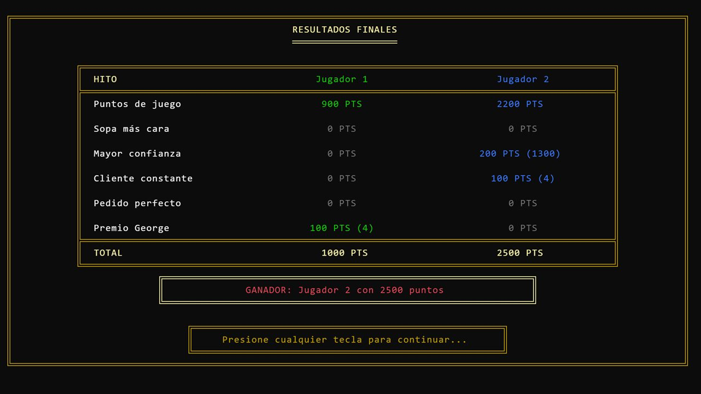
Individual · C++ · Consola
Juego de dados por turnos para dos jugadores: cada combinación es un ingrediente de la sopa y, si una tirada no suma, llega el temido "No soup for you!".
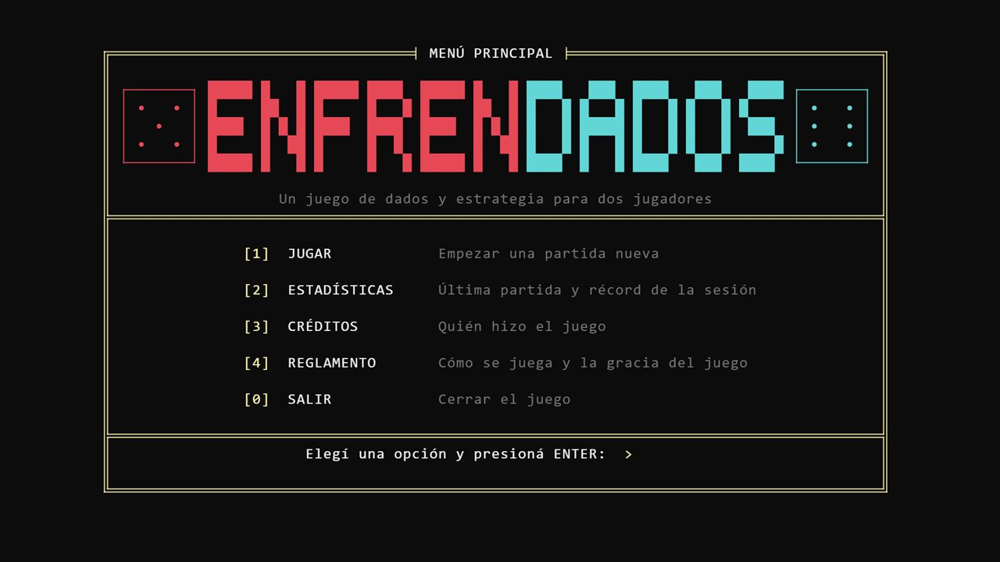
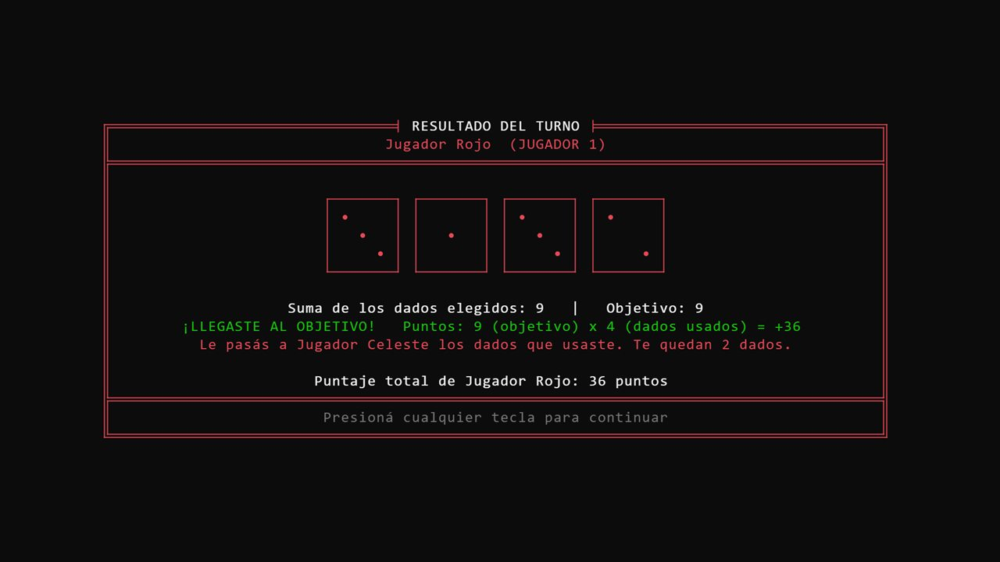
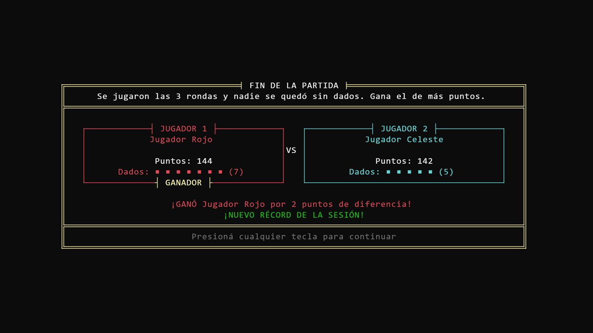
Individual · C++ · Consola
Juego de dados por turnos para consola: dos dados de 12 caras definen un objetivo y cada jugador debe combinar dados que sumen exactamente ese valor.
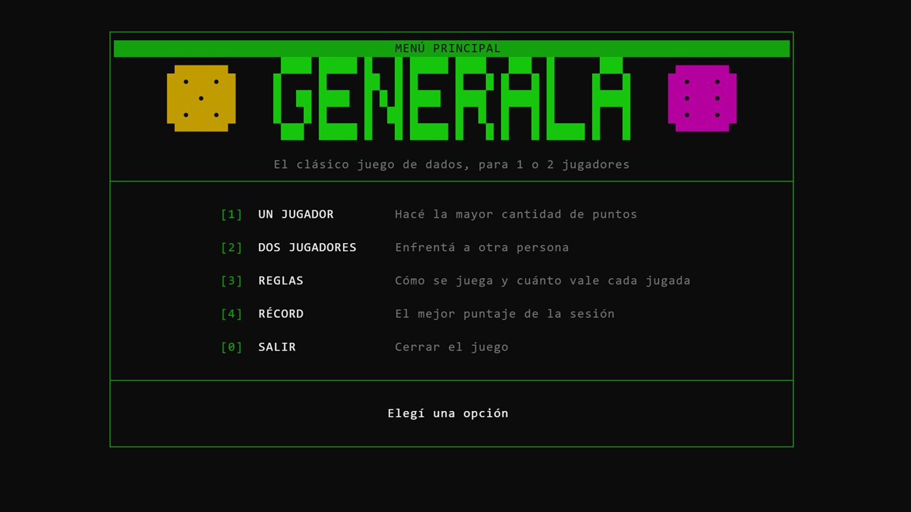
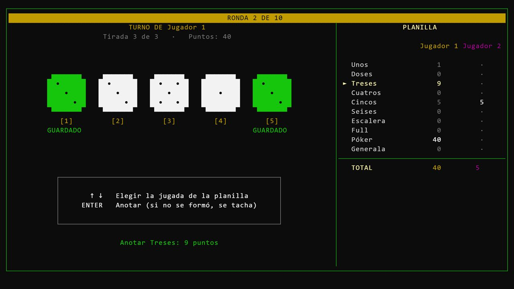
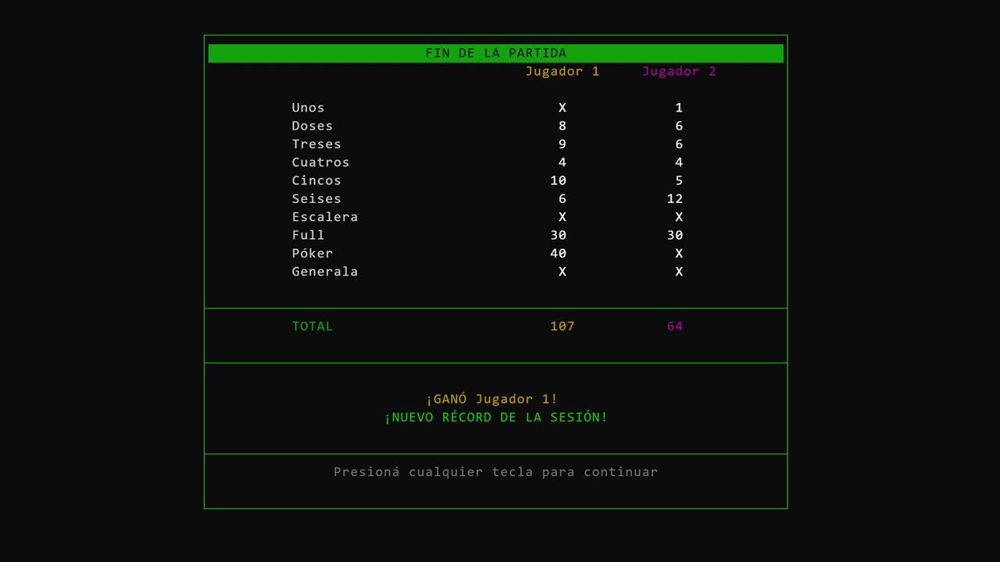
Individual · C++ · Consola
Versión para consola del clásico juego de dados, para uno o dos jugadores, con planilla de puntaje completa.
Programas de consola en C++ y C# y scripts de bases de datos en SQL Server: guías, ejercicios y trabajos prácticos de la carrera, resueltos y ejecutados.
Perfiles profesionales y datos de contacto.
Para propuestas laborales o consultas, completá el formulario o escribime por mail. Respondo a la brevedad.